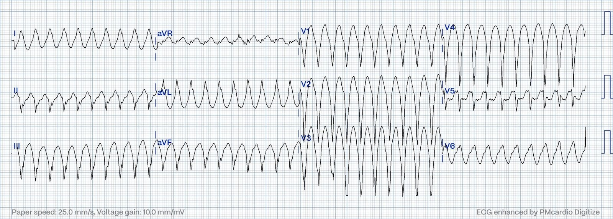
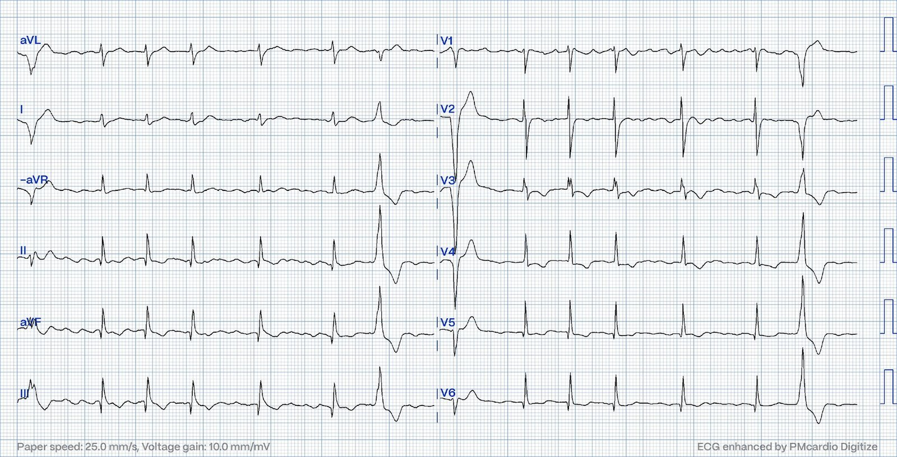
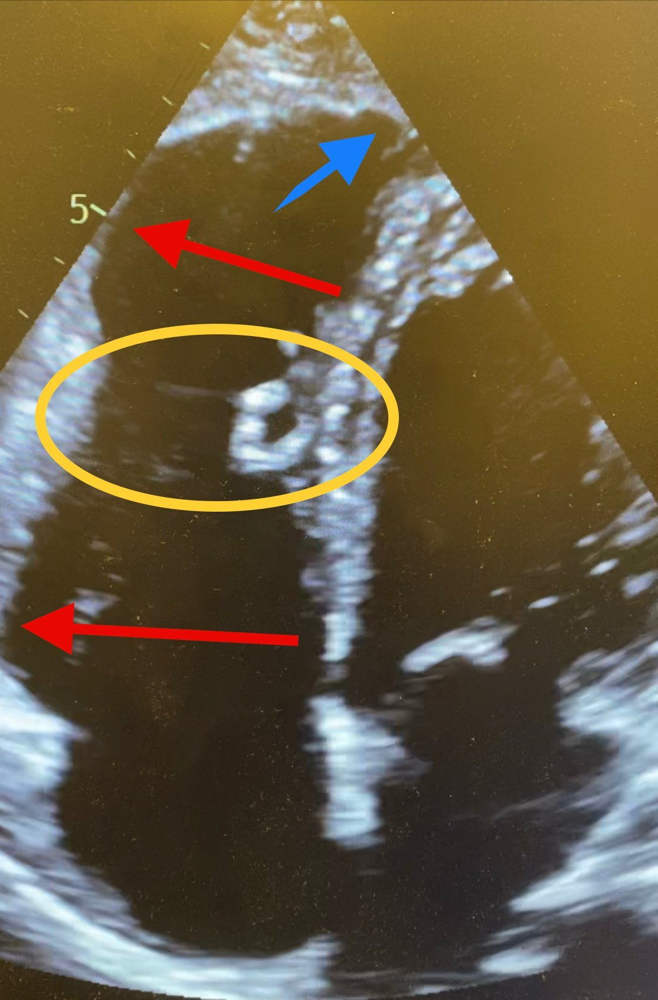
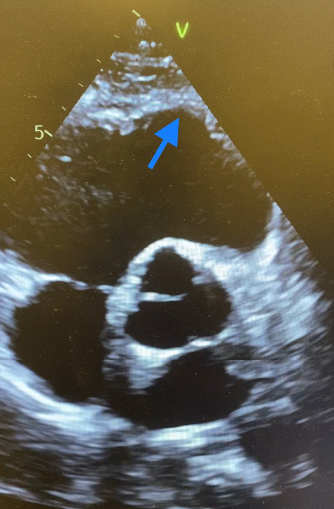
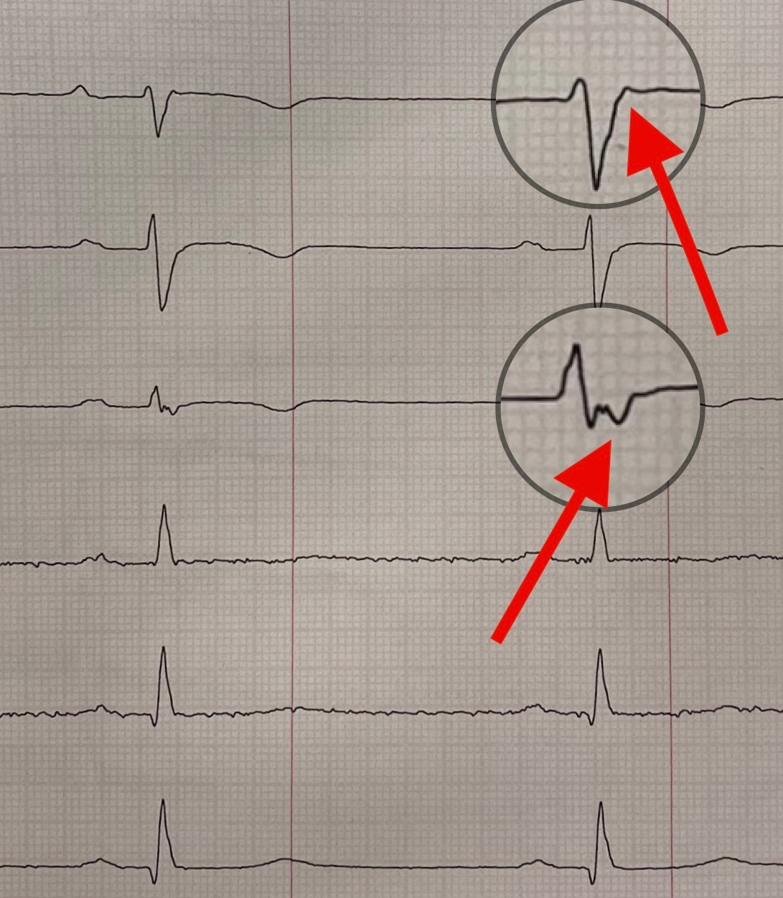
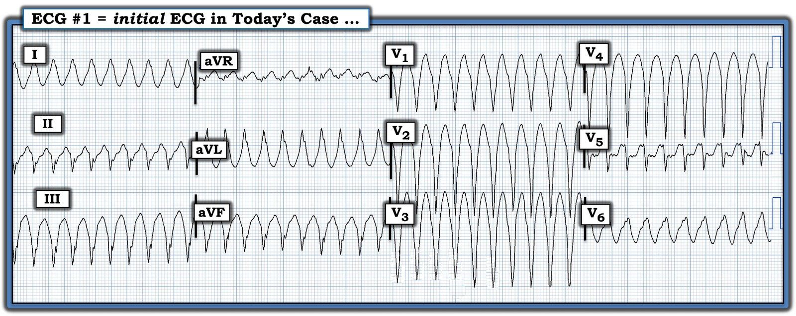
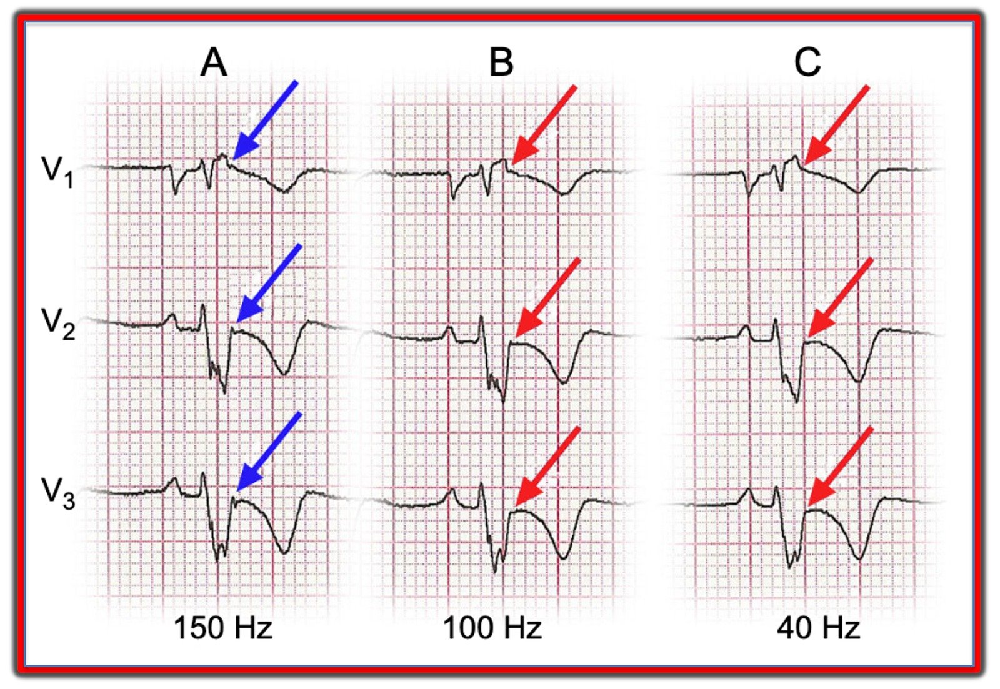
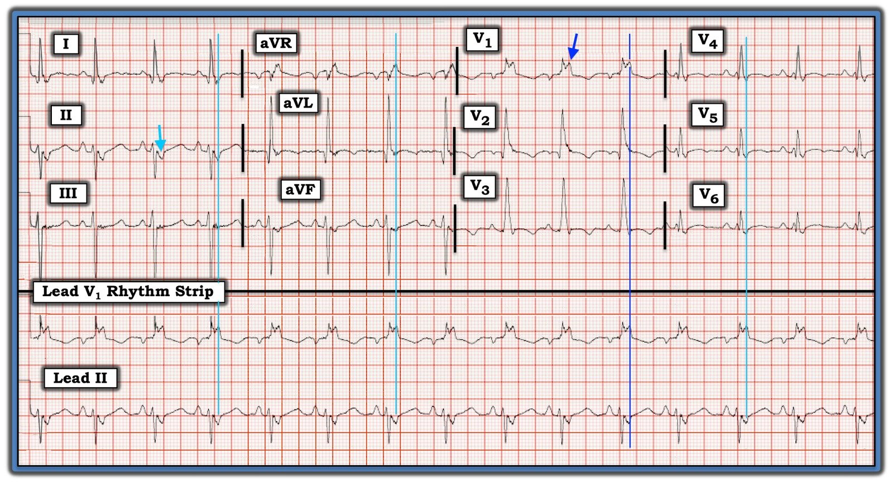

24/03/2024 — Hồi hộp đánh trống ngực và tiền ngất ở một nam giới ngoài 40 tuổi
Bản dịch tiếng Việt của bài "Palpitations and presyncope in a 40-something" – Dr. Smith’s ECG Blog. Giữ nguyên toàn bộ 10 hình ảnh của bản gốc.
Tác giả: Magnus Nossen
Điện tâm đồ dưới đây là của một nam giới ngoài 40 tuổi, không có tiền sử bệnh lý liên quan. Bệnh nhân gọi đội cấp cứu ngoài viện (EMS) vì đột ngột đau ngực, hồi hộp đánh trống ngực (palpitations) và choáng váng. Triệu chứng xuất hiện khi đang chơi bóng đá.
Khi nhìn điện tâm đồ này, diễn giải ban đầu của bạn là gì? Bước tiếp theo của bạn trong xử trí bệnh nhân này là gì?


Điện tâm đồ ban đầu trong ca hôm nay do EMS ghi, cho thấy một nhịp nhanh QRS rộng (WCT) rất nhanh với tần số tim khoảng 245 nhịp/phút. Đây là một rối loạn nhịp rất nhanh, và hầu hết bệnh nhân người lớn, kể cả người khỏe mạnh, nhiều khả năng sẽ có dấu hiệu tổn hại huyết động (tụt huyết áp, đau ngực, khó thở) ở tần số tim nhanh như vậy nếu rối loạn nhịp kéo dài. Sốc điện chuyển nhịp (cardioversion) nên là bước tiếp theo của bạn trong xử trí bệnh nhân này. Điện tâm đồ 12 chuyển đạo có thể được xem xét kỹ sau.
Ban đầu bệnh nhân «dung nạp» được rối loạn nhịp (duy trì được huyết áp) và được nhân viên cấp cứu ngoài viện tiêm amiodarone tĩnh mạch trên đường đến bệnh viện.
Khi đến nơi, bệnh nhân vã mồ hôi và tụt huyết áp nặng. (HA tâm thu khoảng 60 mmHg) Các biện pháp để sốc điện chuyển nhịp ngay lập tức đã được tiến hành. Trong khi bệnh nhân đang được dùng propofol để an thần, rối loạn nhịp tự kết thúc. Không có cú sốc điện nào được thực hiện. Huyết áp và tình trạng của bệnh nhân cải thiện ngay lập tức.
Bây giờ là lúc xem kỹ hơn điện tâm đồ trước viện. Bản ghi cho thấy một nhịp nhanh QRS rộng, trong đó QRS âm hoàn toàn ở các chuyển đạo II, III và aVF. Ở các chuyển đạo trước tim có sóng QS từ V1-V4. Vùng chuyển tiếp R/S xảy ra muộn, giữa chuyển đạo V5 và V6. Vectơ QRS dương ở các chuyển đạo bên (I và aVL). Trục QRS hướng lên trên và sang bên. Ở các chuyển đạo trước tim có hình thái «giống LBBB». Gộp lại, trục mặt phẳng trán và hình thái QRS gợi ý rối loạn nhịp xuất phát từ phần mỏm của thất phải.
Điện tâm đồ đầu tiên sau chuyển nhịp (không trình bày ở đây) cho thấy thay đổi sóng ST-T lan tỏa, đúng như dự kiến sau một cơn nhịp nhanh bền bỉ rất nhanh. Dưới đây là một điện tâm đồ ghi lại khoảng 15 phút sau khi cơn loạn nhịp nhanh chấm dứt.
Bạn nghĩ gì về điện tâm đồ lúc nghỉ này? Bạn nhận ra những bất thường nào trên bản ghi 12 chuyển đạo này?


Smith: Cách bố trí ở đây là định dạng Cabrera, sắp xếp theo chiều kim đồng hồ từ góc trên bên trái (aVL) vòng qua I, -aVR, II, aVF và III.
Điện tâm đồ lúc nghỉ không bình thường đối với một nam giới ngoài 40 tuổi. Bản ghi cho thấy rung nhĩ, điều rất hiếm gặp ở một nam giới ngoài 40 tuổi khỏe mạnh. QRS hẹp, có sóng q nhỏ phân bố ở vùng dưới-bên. Nổi bật nhất là sóng T đảo ngược bệnh lý ở các chuyển đạo trước tim, lan rộng tới tận V6, và cả ở II, III, aVF (tất cả những sóng T đảo ngược này đều điển hình cho bệnh cơ tim thất phải).
Bạn có thể hỏi liệu sóng T đảo ngược ở các chuyển đạo trước tim có thể liên quan đến cơn nhịp nhanh trước đó hay không. Liệu chúng có phải là sóng T do trí nhớ tim (memory T waves)? Hoặc có thể là sóng T đảo ngược do thiếu máu cục bộ do tăng nhu cầu? Sóng T ở các chuyển đạo trước tim đơn giản là trông không giống sóng T do trí nhớ tim. Ngoài ra, thông thường cần một thời gian khử cực bất thường dài hơn thì hiện tượng sóng T do trí nhớ tim mới xảy ra. Trong hồ sơ có một điện tâm đồ cũ với những dấu hiệu tương tự ở các chuyển đạo trước tim đầu tiên. Điều này về cơ bản loại trừ thiếu máu cục bộ do tăng nhu cầu là nguyên nhân. (Điện tâm đồ cũ đã không được nhận ra là bệnh lý vào thời điểm ghi). Sóng T đảo ngược rõ hơn ở các chuyển đạo trước tim bên phải, và không có lý do hợp lý nào để một cơn loạn nhịp nhanh gây thiếu máu cục bộ do tăng nhu cầu chủ yếu ở RV ở một người được cho là khỏe mạnh.
Có các PVC với trục và hình thái khác hẳn so với nhịp nhanh QRS rộng. (Các PVC trên bản ghi này dường như có hình thái đường ra thất phải - RVOT).
Tóm lại, nhịp nhanh QRS rộng và điện tâm đồ lúc nghỉ phải khiến bạn cảnh giác với bệnh lý thất phải. Tôi đã đưa điện tâm đồ này qua QoH (Queen of Hearts) để số hóa, và thuật toán AI của QoH không bị đánh lừa bởi các thay đổi ST-T trên điện tâm đồ này. Kết quả đọc là không phải OMI, với độ tin cậy cao.
Từ những thông tin hiện có, các chẩn đoán sau có thể được đưa vào danh sách chẩn đoán phân biệt
- Bệnh cơ tim (thất phải) gây loạn nhịp kèm VT
- Sẹo/thiếu máu cục bộ cơ tim thất phải gây VT
- Bất kỳ bệnh cơ tim nào ảnh hưởng đến RV (ví dụ viêm cơ tim/sarcoidosis v.v.)
- AVRT ngược chiều (antidromic) với đường phụ (AP) sau-bên ở bên phải
- Nhịp nhanh qua sợi Mahaim
- RVOT, nhưng VT từ RVOT phải có trục hướng xuống dưới, không phải trục hướng lên trên như trên điện tâm đồ này
Sau khi rối loạn nhịp chấm dứt, bệnh nhân nhanh chóng ổn định và được siêu âm tim tại giường. Các video dưới đây cho thấy các mặt cắt tập trung vào thất phải. RV giãn với chức năng tâm thu giảm, có mỏng cơ tim và giảm động ở những vùng rộng của RV, đặc biệt là các vùng mỏm và RVOT. Phân suất tống máu RV trên thăm dò chính thức là 34%. Thể tích cuối tâm trương thất phải (RVEDV) tăng đáng kể. Cũng ghi nhận giảm động ở LV theo kiểu không tương ứng phân bố mạch vành. LVEF được bảo tồn.
Dưới đây là các mặt cắt tập trung vào thất phải (khung trái) và RVOT (khung phải). Các video cho thấy cả RV lẫn đường ra đều giãn đáng kể. Cơ tim RV có mỏng cơ tim khu trú và các túi phình.
Dưới đây là các ảnh tĩnh với mũi tên đỏ chỉ vào các vùng đáy và mỏm bị giãn của RV. Khoanh vàng là vùng giữa thất của RV, giãn ít hơn, có lẽ do được dải điều hòa (moderator band) giữ lại. Mũi tên xanh dương chỉ vào chỗ cơ tim mỏng đi ở cả vùng mỏm RV và ở RVOT.




Bàn luận: Tổng hợp tất cả thông tin, bệnh nhân này nhiều khả năng mắc bệnh cơ tim gây loạn nhịp (arrhythmogenic cardiomyopathy, AC), được biết đến nhiều hơn với tên ARVC. Bệnh sử điển hình, với cơn loạn nhịp nhanh khởi phát đột ngột khi gắng sức thể lực. Không hiếm khi biểu hiện đầu tiên lại là đột tử do tim (SCD). Thực tế, đây là một trong những nguyên nhân hàng đầu gây SCD ở người dưới 40 tuổi. Vì vậy, nhận diện rối loạn này là rất quan trọng. AC là bệnh trong đó cơ tim bị thay thế bởi mô xơ-mỡ. Bệnh thường và chủ yếu ảnh hưởng đến thành tự do và các vùng mỏm của RV, nhưng cũng có thể ảnh hưởng đến thất trái, và đó là lý do vì sao bệnh cơ tim gây loạn nhịp là tên gọi chính xác hơn cho rối loạn này so với ARVC.
Smith: 5 thực thể tôi tìm trên mọi điện tâm đồ của bệnh nhân ngất mà khi đến viện không còn triệu chứng, có nhịp xoang và không có thiếu máu cục bộ, là:
1. WPW
2. HOCM (bệnh cơ tim phì đại tắc nghẽn)
3. Brugada
4. QT dài
5. Bệnh cơ tim thất phải
VT trong ca của chúng ta xuất phát từ phần mỏm của RV. Có các dấu hiệu bệnh lý RV trên điện tâm đồ (sóng T đảo ngược ở V1-V3). Tôi không thấy sóng epsilon nào trên điện tâm đồ sau chuyển nhịp. Sóng T đảo ngược lan khắp các chuyển đạo trước tim tới tận V6, cho thấy có cả tổn thương cơ tim thất trái. Điều này phù hợp với các dấu hiệu trên siêu âm tim và MRI trong ca này. Rung nhĩ cũng có liên quan với ARVC.
Chẩn đoán AC dựa trên tiền sử gia đình, tiền sử bệnh nhân, các đặc điểm điện tâm đồ, siêu âm tim và chẩn đoán hình ảnh, cũng như xét nghiệm di truyền. Các tiêu chuẩn chẩn đoán khá phức tạp. Các dấu hiệu lâm sàng và cận lâm sàng được xếp thành tiêu chuẩn chính và tiêu chuẩn phụ. Để chẩn đoán xác định cần 2 tiêu chuẩn chính, hoặc 1 tiêu chuẩn chính và hai tiêu chuẩn phụ, hoặc 4 tiêu chuẩn phụ.
Một số thông tin về sóng epsilon và điện thế muộn (late potentials): Trong ARVC, điện thế muộn được cho là do hậu khử cực sớm của các tế bào ở thất (phải). Biên độ của chúng thường quá nhỏ để hiện lên trên điện tâm đồ thông thường. Tuy nhiên, khi lấy trung bình nhiều phức bộ QRS ghi được (thường > 200 phức bộ QRS liên tiếp), nhiễu ngẫu nhiên bị lọc bỏ và điện thế muộn có thể hiện ra. Bản ghi như vậy được gọi là điện tâm đồ trung bình tín hiệu (Signal Averaged ECG) (SAECG).
Đôi khi điện thế muộn có thể biểu hiện trên điện tâm đồ thông thường dưới dạng sóng epsilon. Mặc dù sóng epsilon được xem là một tiêu chuẩn chẩn đoán chính của bệnh cơ tim gây loạn nhịp (AC), giá trị chẩn đoán của nó bị hạn chế vì đây là dấu hiệu của giai đoạn muộn của bệnh. Sẽ chính xác hơn nếu nói rằng sóng epsilon là một “dấu ấn” của AC, nhưng có độ nhạy chẩn đoán thấp. Mặc dù sóng epsilon có độ đặc hiệu cao đối với AC, nó vẫn có thể xuất hiện trong các tình trạng bệnh lý khác.
Như đã đề cập, không có sóng epsilon trên điện tâm đồ sau chuyển nhịp. Nhiều điện tâm đồ đã được ghi cho bệnh nhân trong ca hôm nay. Vài ngày sau khi nhập viện, nhịp của bệnh nhân tự chuyển về nhịp xoang. Một điện tâm đồ khác đã được ghi. Các chuyển đạo trước tim được trình bày dưới đây ở tốc độ 50mm/s. Có lẽ đã có khác biệt về cài đặt bộ lọc, nhưng sóng epsilon giờ đây dường như dễ dàng nhận thấy ở các chuyển đạo V1-V3.


Vì trong ca này có sóng epsilon (tiêu chuẩn chính), một SAECG bệnh lý thực sự không bổ sung thêm giá trị chẩn đoán nào. (Xem liên kết này để có một bài bàn luận rất hay về điện tâm đồ trung bình tín hiệu)
Bệnh nhân AC cần được giáo dục về tình trạng bệnh của mình. Không khuyến cáo tập luyện gắng sức nặng vì điều này được cho là dẫn đến tiến triển bệnh. Các rối loạn nhịp ác tính ở bệnh nhân AC thường xảy ra khi gắng sức thể lực. Điều trị chống loạn nhịp bằng thuốc chẹn beta là nền tảng, và nên cân nhắc đặt ICD cho tất cả bệnh nhân có ngất hoặc rối loạn nhịp thất được ghi nhận. Bệnh nhân trong ca hôm nay được dùng thuốc chẹn beta và được cấy máy khử rung tim/chuyển nhịp (ICD). Không có dữ liệu theo dõi dài hạn.
Những điểm cần học:
1) AC không chỉ giới hạn ở RV, mặc dù tổn thương RV là dấu ấn
đặc trưng của bệnh.
2) Tập luyện thể lực có thể đẩy nhanh tiến triển bệnh. Nên tránh tập luyện gắng sức nặng.
3) Sóng epsilon gợi ý mạnh bệnh cơ tim gây loạn nhịp, nhưng không phải là đặc hiệu chẩn đoán (pathognomonic) vì chúng có thể xuất hiện trong các bệnh lý khác (ví dụ sarcoidosis).
4) AC là bệnh mạn tính tiến triển. Thuốc chẹn beta và ICD được dùng để giảm tần suất rối loạn nhịp và SCD liên quan đến rối loạn nhịp.
5) Đôi khi có thể triệt đốt VT, và trong những trường hợp hiếm cần phải ghép tim.
Vui lòng xem các ca dưới đây để biết thêm về bệnh cơ tim gây loạn nhịp.
A young lady with wide complex tachycardia (Một phụ nữ trẻ bị nhịp nhanh QRS rộng)
A young man with syncope while biking (Một nam thanh niên bị ngất khi đạp xe)
Afib in ARVC (Rung nhĩ trong ARVC)
Diagnostic approach in ARVC (Cách tiếp cận chẩn đoán ARVC)

===================================
BÌNH LUẬN CỦA TÔI, bởi KEN GRAUER, MD (22/3/2024):
===================================
ARVD không phải là một thực thể thường gặp. Tỷ lệ mắc ước tính trong dân số chung là ~1 trên 2.500 đến 5.000 người (Shah và cs.: StatPearls — 2023). Tuy nhiên, trong số những người trẻ tuổi đột tử — ARVC/D (bệnh cơ tim-loạn sản thất phải gây loạn nhịp – Arrhythmogenic Right Ventricular Cardiomyopathy-Dysplasia) có thể là nguyên nhân của tới 5-10% số trường hợp (khoảng tỷ lệ này tùy thuộc vào đặc điểm nhân khẩu học và khu vực địa lý của nhóm được nghiên cứu).
- Từ số liệu thống kê trên, có thể thấy rõ rằng mặc dù ARVC/D không phổ biến (nếu không muốn nói là hiếm) trong dân số chung — nó rõ ràng là một bệnh lý quan trọng cần cân nhắc khi một người trưởng thành trẻ tuổi đến cấp cứu vì một rối loạn nhịp thất ác tính.
- Ca bệnh của Dr. Meyers trong bài ngày 3 tháng Sáu năm 2023 của Dr. Smith’s ECG Blog minh họa rằng dù ARVD ít gặp (tức là, Dr. Meyers trước đó chưa từng tự mình đưa ra chẩn đoán này ngay từ đầu (de novo) dù có kinh nghiệm dày dặn tại khoa cấp cứu!) — việc thăm khám và nhận ra ARVD là nguyên nhân gây cơn VT lúc vào viện của bệnh nhân trong ca ngày 3 tháng Sáu năm 2023 này đã dẫn tới việc cấy máy khử rung tim cấy được tự động (AICD), có lẽ đã cứu sống người phụ nữ trẻ trước đó khỏe mạnh này.
Tương tự, người đàn ông hơn 40 tuổi trước đó khỏe mạnh được Dr. Nossen trình bày trong ca hôm nay là thêm một người trưởng thành trẻ tuổi nữa mà việc nhận ra ARVD là nguyên nhân gây cơn VT — một lần nữa đã dẫn tới việc cấy ICD, có lẽ đã cứu sống bệnh nhân.
- Với phần mở đầu này — tôi bổ sung những điểm sau vào phần trình bày sâu sắc của Dr. Nossen:
=====================================
Về ĐIỆN TÂM ĐỒ Ban đầu:
- Nguyên nhân thường gặp nhất của VT bền bỉ ở một người trưởng thành trẻ tuổi trước đó khỏe mạnh — là VT vô căn. Như chúng tôi đã bàn luận nhiều lần trên Dr. Smith’s ECG Blog (Xem Bình luận của tôi và Bảng tóm tắt trong Hình 2 của bài ngày 14 tháng Hai năm 2022) — các VT phân nhánh (Fascicular VT) và các VT đường ra ( = RVOT VT và LVOT VT) cho đến nay là những dạng VT vô căn thường gặp nhất.
- Phần lớn các trường hợp — trục mặt phẳng trán và hình dạng QRS trên điện tâm đồ ghi trong cơn VT cho phép dễ dàng nhận ra liệu một trong các dạng VT vô căn thường gặp nói trên có phải là nguyên nhân hay không. Tuy nhiên, đôi khi — không thể phân biệt ARVD với RVOT VT chỉ dựa trên một điện tâm đồ duy nhất, vì cả hai bệnh lý đều có thể biểu hiện hình dạng giống LBBB ở các chuyển đạo ngực kèm trục hướng xuống dưới trên mặt phẳng trán.
- Ngoài ra (như Dr. Nossen đã nêu) — do phân loại “ARVD” đã được mở rộng dựa trên phát hiện rằng không chỉ thất phải mà cả thất trái cũng có thể bị tổn thương (tức là, AC = bệnh cơ tim gây loạn nhịp (Arrhythmogenic Cardiomyopathy)) — ĐIỀU CỐT LÕI vào năm 2024 là các đặc điểm trên điện tâm đồ không đủ tin cậy để dựa vào nhằm nhận diện mọi trường hợp AC. Do đó, ngoài siêu âm tim — hầu như mọi người trưởng thành trẻ tuổi đến viện vì một cơn VT bền bỉ đều nên được chụp MRI tim để loại trừ một bệnh lý tim nền nặng hơn.
- Dù vậy, điện tâm đồ ban đầu trong ca hôm nay (mà tôi đã sao lại trong Hình 1) không giống bất kỳ dạng VT vô căn thường gặp nào vì: i) QRS giãn rộng rõ rệt; ii) Hình dạng QRS vô định hình (không giống bất kỳ dạng rối loạn dẫn truyền nào đã biết); — và, iii) Có trục lệch cực độ ( = QRS âm hoàn toàn ở từng chuyển đạo dưới). Điểm MẤU CHỐT: Siêu âm tim và MRI là những thành phần thiết yếu trong đánh giá ca hôm nay. Điều này vẫn đúng bất kể sóng epsilon có hay không được thấy trên điện tâm đồ nền hoặc các điện tâm đồ sau đó của bệnh nhân.


=====================================
Những suy nghĩ bổ sung về sóng Epsilon:
Vì các câu hỏi liên tục được đặt ra về việc nhận diện sóng epsilon — tôi nghĩ sẽ hữu ích nếu trích lại một phần bàn luận của tôi từ bài ngày 3 tháng Sáu năm 2023 đã dẫn ở trên trong Dr. Smith’s ECG Blog.
Vì sao lại khó đến vậy để phát hiện sóng epsilon trên điện tâm đồ 12 chuyển đạo tiêu chuẩn?
- Có nhiều lý do …
Lý do #1: Dùng sai cài đặt bộ lọc …
Quá thường xuyên — cài đặt bộ lọc bị bỏ qua. Các cài đặt khác nhau thường được dùng cho chế độ theo dõi, khi trọng tâm là xác định nhịp, so với chế độ chẩn đoán, khi trọng tâm là đọc các dạng sóng của 12 chuyển đạo. Mức lọc mạnh hơn thường được dùng ở chế độ theo dõi, với cài đặt thông dụng là từ 0.5 Hz đến 40 Hz. Làm vậy có ưu điểm là giảm thiểu nhiễu và trôi đường nền vốn có thể ảnh hưởng đến việc đọc nhịp. Ngược lại — một dải thông rộng hơn (thường từ 0.05 Hz đến 150 Hz) được khuyến cáo cho chế độ chẩn đoán, khi việc phân tích đoạn ST chính xác hơn là thiết yếu.
- Tôi lấy Hình 2 từ hình minh họa của García-Niebla và cs. (Rev Esp Cardiol 69(4):438, 2016) — để cho thấy việc chọn tần số cắt 40 Hz (vốn thường được chọn trong thực hành lâm sàng nhằm “cải thiện” hình thức bản ghi) có thể làm biến mất các đặc điểm tinh tế trên điện tâm đồ như sóng epsilon, vốn chỉ được thấy rõ nhất trong Hình 2 ở cài đặt bộ lọc thông cao với tần số cắt 150 Hz (mũi tên XANH DƯƠNG).


Lý do #2: Dùng sai hệ thống chuyển đạo …
Tôi đặc biệt khuyến nghị phần viết của các BS. Buttner và Cadogan trên Life-In-The-Fast-Lane về chuyển đạo Fontaine (Fontaine Lead) — https://litfl.com/fontaine-lead/ — vì bài tổng quan ngắn gọn này nêu những điều cần biết để tối ưu hóa khả năng nhận diện sóng epsilon trên điện tâm đồ ở bệnh nhân ARVD. Dưới đây tôi nêu bật một vài điểm MẤU CHỐT từ bài tổng quan này của LITFL:
- Nhận diện sóng epsilon có lẽ là một trong những dấu hiệu điện tâm đồ đặc hiệu nhất của ARVD. Những xung nhỏ này có thể thấy như một “nốt nhỏ” (blip) hay “gợn” (wiggle) ở cuối, hoặc ngay sau phức bộ QRS. Chúng thấy rõ nhất ở chuyển đạo V1,V2 — và kém rõ hơn một chút ở V3,V4.
- LITFL trích con số 23% cho tần suất thấy được sóng epsilon trên điện tâm đồ tiêu chuẩn. Cài đặt bộ lọc đi kèm con số này không được nêu — vì vậy, với xu hướng quá thường xuyên chọn cài đặt thông cao 40 Hz (thay vì cài đặt tối ưu 150 Hz) — có thể dự đoán khả năng tìm thấy sóng epsilon còn thấp hơn nữa trên các điện tâm đồ được gửi đến chúng tôi để tìm sóng epsilon.
- Ngược lại — việc đặt các điện cực của máy điện tâm đồ tiêu chuẩn theo một cách đặc biệt gọi là cách đặt chuyển đạo Fontaine — cho phép phát hiện sóng epsilon ở tới 75% bệnh nhân! Thay vì sao lại các hướng dẫn dễ thực hiện trên trang LITFL — tôi xin giới thiệu bạn đọc quan tâm trực tiếp tới trang của họ — https://litfl.com/fontaine-lead/ —
- Cuối cùng — Sóng epsilon có nhiều hình dạng có thể gặp! Bao gồm: i) Sóng “gợn” (wiggle); ii) Gai nhỏ hướng lên; iii) Gai nhỏ hướng xuống; và/hoặc, iv) Các sóng điện thế trơn ở cuối QRS (làm QRS ở chuyển đạo V1 kéo dài, vượt thời gian QRS ở chuyển đạo V3 ≥25 msec.).
Sóng Epsilon có thể lớn và rõ nét đến mức nào?
Phần lớn các ví dụ về sóng epsilon mà tôi từng thấy cho thấy những xung tương đối nhỏ. Vì việc ghi chú cài đặt bộ lọc rất thường bị bỏ sót trên các điện tâm đồ được gửi đến tôi — không thể nói cài đặt bộ lọc không tối ưu có thể đã ảnh hưởng bao nhiêu đến kích thước nhỏ của các xung sóng epsilon này.
- Trong ca hôm nay — không có ghi chú về cài đặt bộ lọc. Dù vậy — hình phóng đại với các mũi tên ĐỎ của Dr. Nossen trên một trong các điện tâm đồ sau đó cho thấy rõ một xung sóng epsilon nổi bật (thấy rõ nhất ở chuyển đạo V3).
Đôi khi — sóng epsilon có thể lớn và cực kỳ rõ nét. Điện tâm đồ trong Hình 3 (lấy từ CA NÀY) — là minh họa sóng epsilon TỐT NHẤT mà tôi từng thấy.
- Nhịp trong Hình 3 là nhịp xoang — bằng chứng là các sóng P đều đặn, dương ở chuyển đạo II, với khoảng PR hằng định và bình thường. Phức bộ QRS rộng, với hình dạng QRS phù hợp với RBBB/LAHB.
- Lưu ý có sóng T đảo ngược ở các chuyển đạo phía trước, như dự kiến trong ARVD (mặc dù bản thân sự hiện diện của RBBB cũng có thể giải thích một phần sóng T đảo ngược ở phía trước này).
- Điểm MẤU CHỐT: Lý do khiến QRS ở chuyển đạo V1 có hình dạng kỳ dị — là vì QRS ở chuyển đạo này bị kéo dài bởi một sóng Epsilon khổng lồ (mũi tên XANH DƯƠNG đậm).
- Để hỗ trợ tìm sóng Epsilon ở các chuyển đạo khác — tôi đã kẻ một đường thời gian thẳng đứng màu XANH DƯƠNG đậm qua đỉnh của sóng Epsilon khổng lồ ở chuyển đạo V1 — kéo dài xuống qua dải nhịp chuyển đạo II dài ở phía dưới bản ghi. Làm như vậy xác định thời điểm trên 2 dải nhịp chuyển đạo dài ghi đồng thời đánh dấu sự xuất hiện của sóng Epsilon.
- Dùng điểm tham chiếu mà chúng tôi đã xác định cho sóng Epsilon trên các dải nhịp chuyển đạo II dài và chuyển đạo V1 — tôi kéo dài lên trên một đường thời gian thẳng đứng màu XANH DƯƠNG nhạt để làm nổi bật vị trí dự kiến của bất kỳ sóng Epsilon nào có thể thấy ở các chuyển đạo ghi đồng thời I,II,III — aVR,aVL,aVF — và V4,V5,V6.
- Mũi tên XANH DƯƠNG nhạt ở chuyển đạo II làm nổi bật một sóng Epsilon âm lớn đến bất ngờ ở chuyển đạo này.
- Lần theo các đường thời gian màu XANH DƯƠNG nhạt kéo dài lên trên này — có thể thấy các sóng Epsilon âm nhỏ hơn nhưng chắc chắn hiện diện cũng có ở các chuyển đạo I, aVL, aVF, và V3 đến V6.
- Một sóng Epsilon dương khác thấy ở chuyển đạo aVR.

